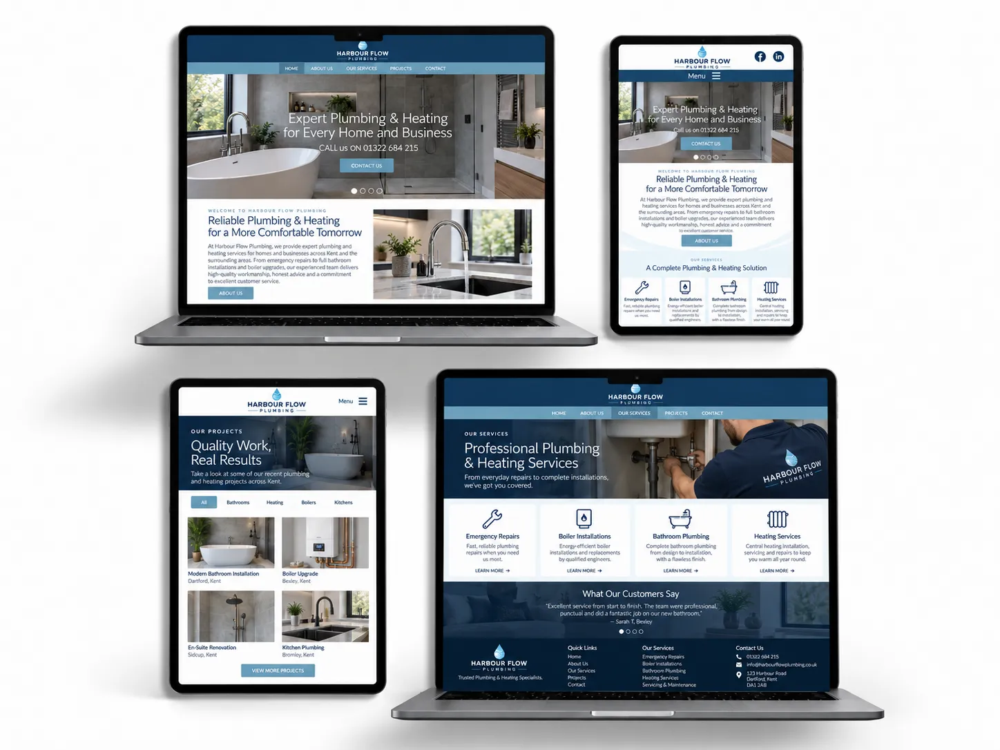
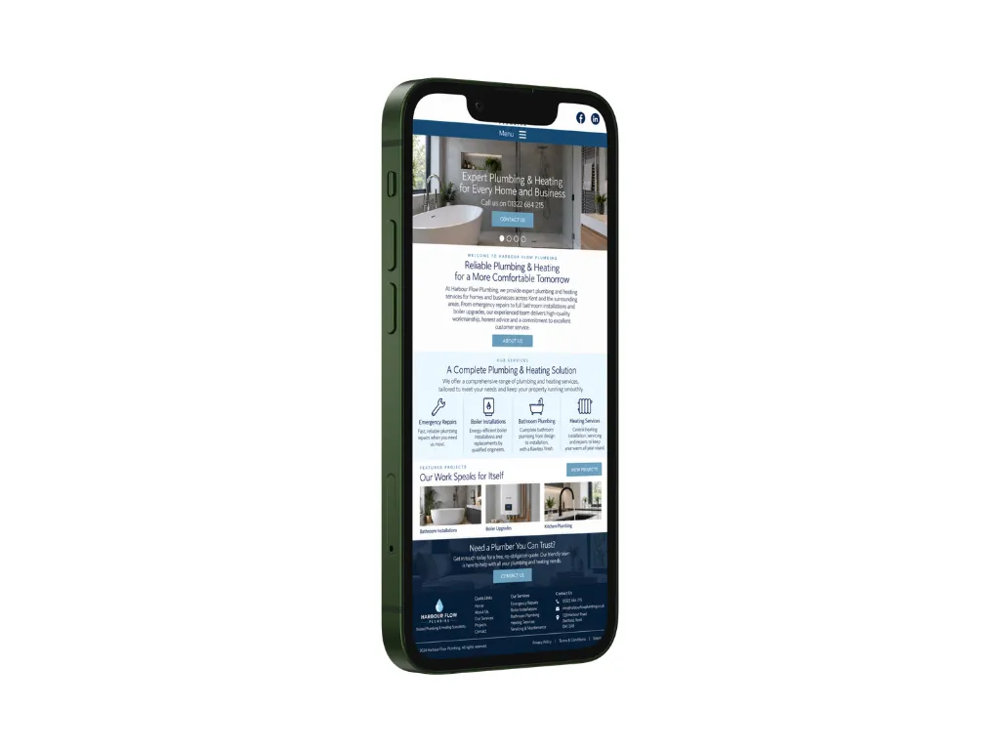
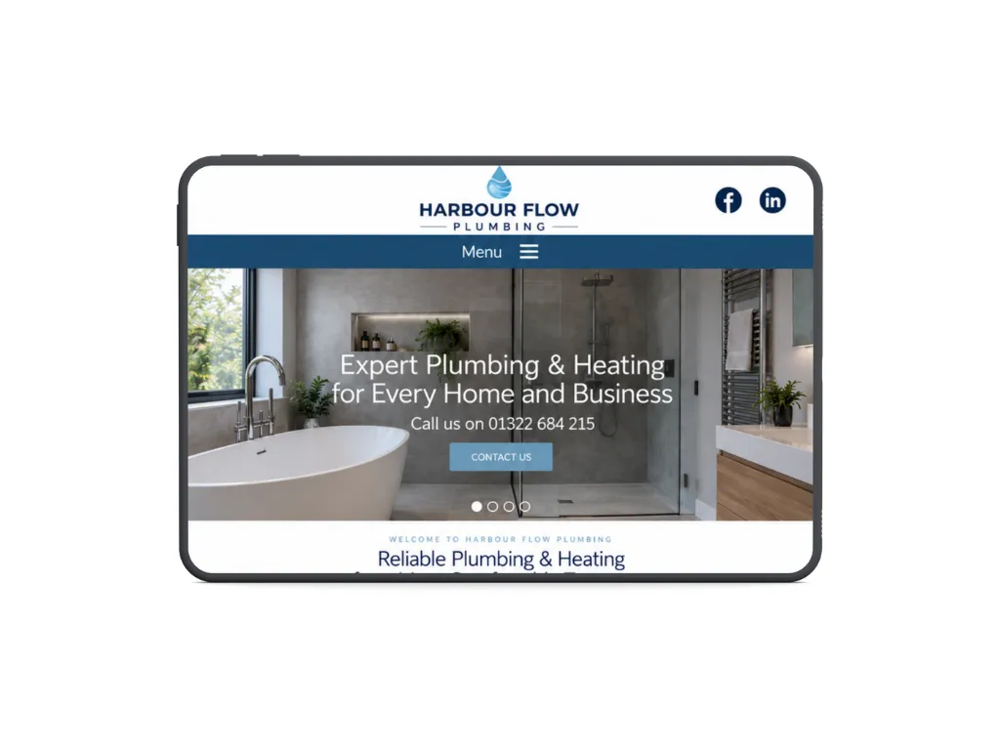
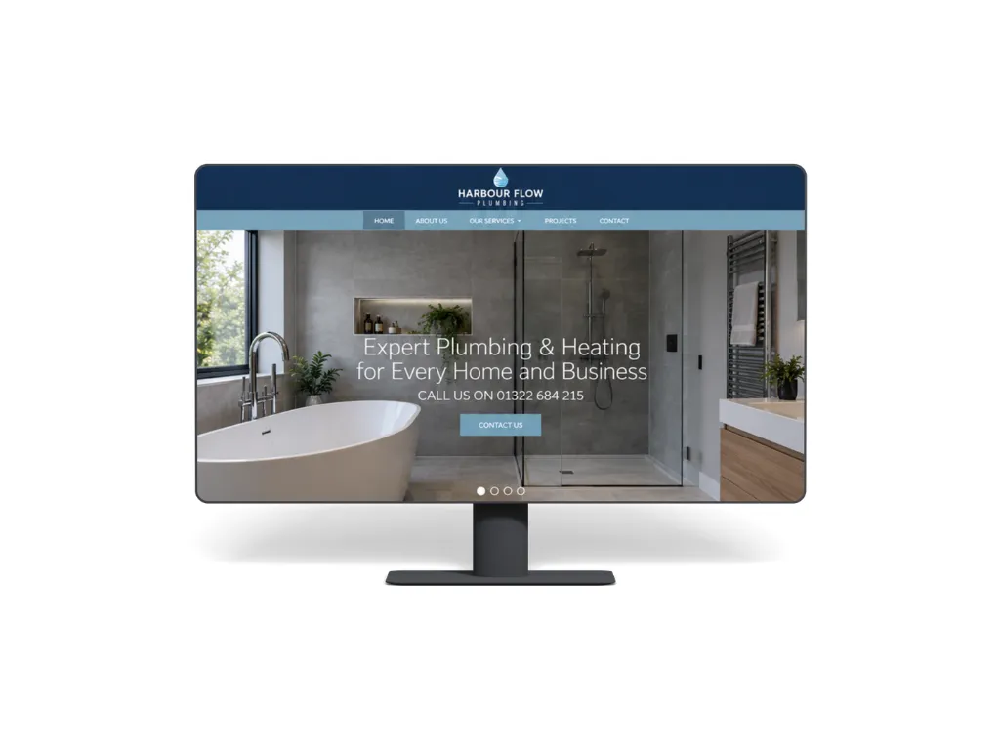

A new website for a Dorset plumbing business
How I helped:

Project overview
- Service
- Small business website
- Pages
- 5
- CMS
- Sanity
- Timescale
- 2 weeks
- Location
- Dorset
A clearer online presence for a growing local business
The business had an older website that was hard to navigate and no longer reflected the quality of its services. It needed a clearer, more professional site that gave potential customers confidence from the first visit.
The brief
Build a simple, modern website that explains the company’s services clearly, works well across devices and makes it easy to get in touch.
Scope


Designed around how customers use the site
The priority was a clear, fast site with a simple design that suited the business.
I simplified the navigation so visitors could understand the services quickly and move between the main pages. I also made contact details and enquiry options easier to find.
The site was built for desktop, tablet and mobile, with performance and accessibility considered throughout. I reorganised the content, selected imagery to support the design and configured the CMS so the client could update selected content after launch.
Key improvements

Start a similar project
If your website needs replacing or you need a new one from scratch, tell me a little about your project.
Tell me about your project